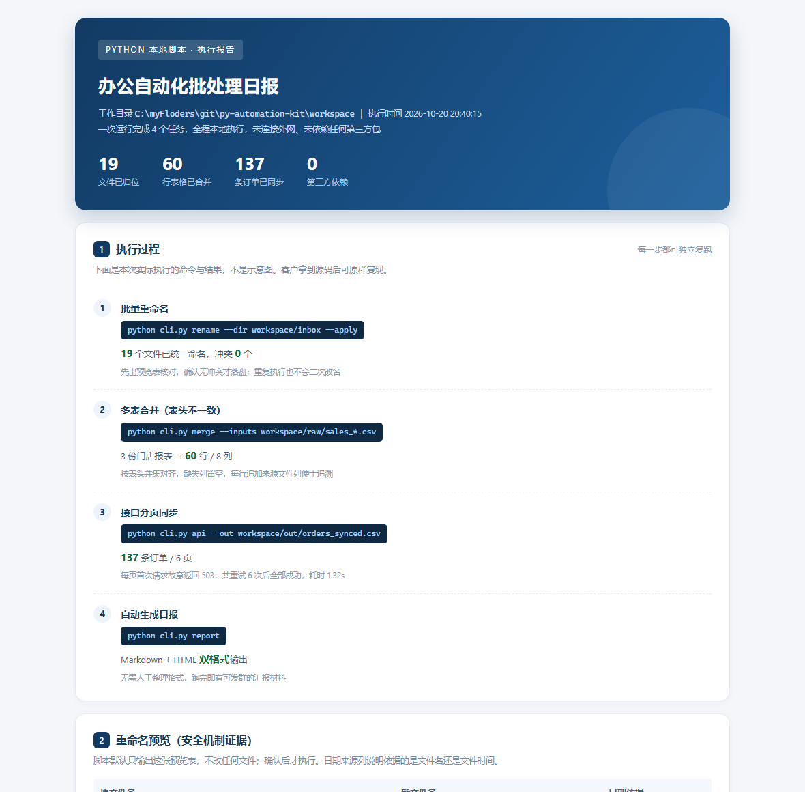
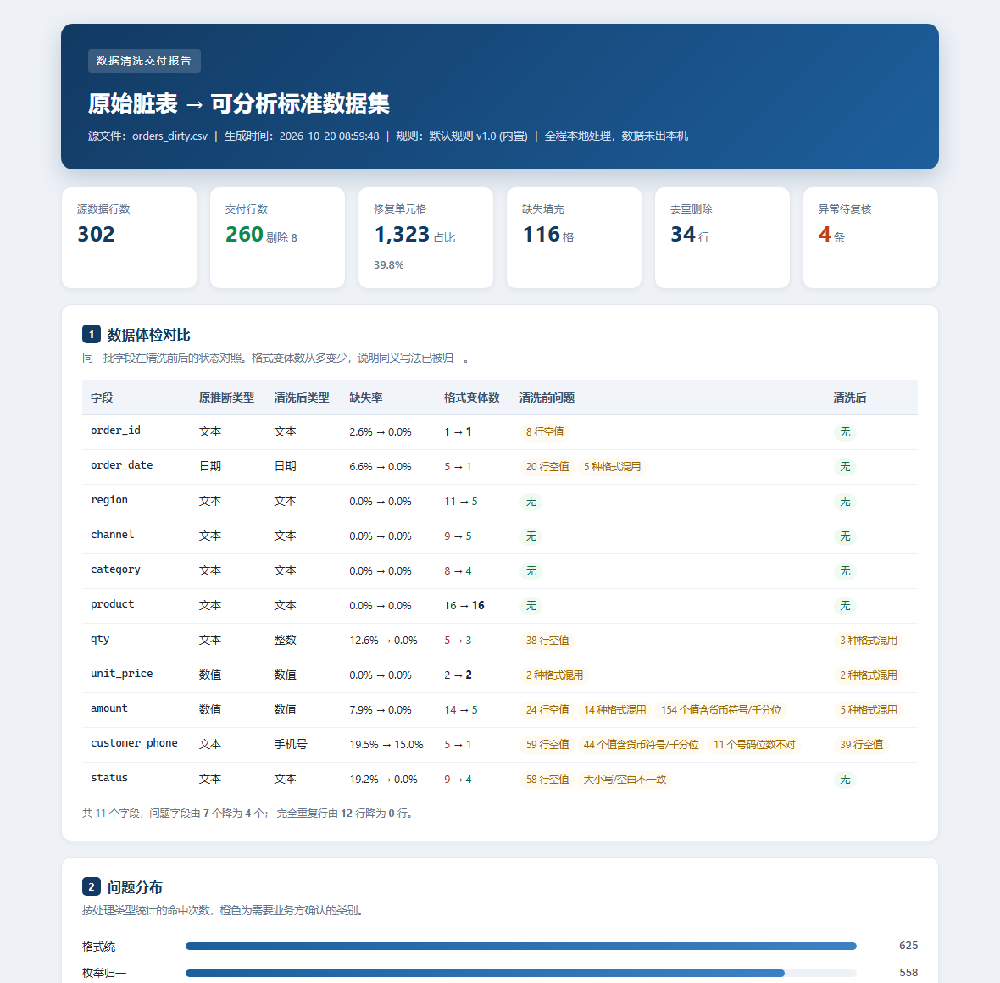
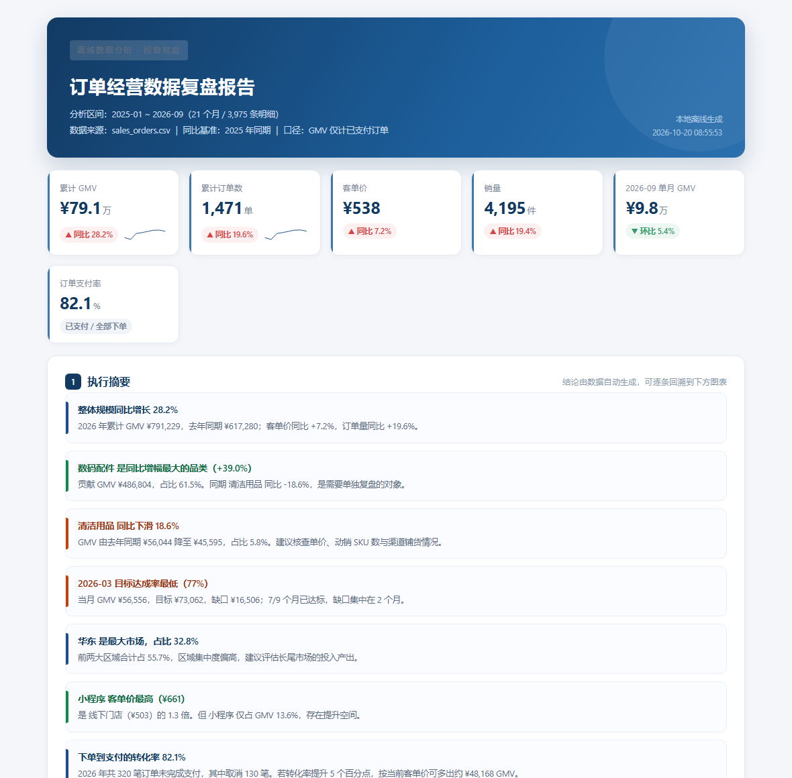

Python 脚本开发 · 数据清洗 · 离线数据分析，三个方向各有一个真实跑通的项目。下面所有截图不是示意图，是脚本实际运行的产物。
三个服务单独下单、独立交付；需求跨多步时，也可串成一条流水线（②的清洗产物可直接喂给③，已实测验证）。

把每天重复的文件、表格操作，做成一条命令就能跑的本地脚本。

脏表进，标准表出，每一格改动都能查到为什么、改成了什么。

订单明细进，老板能直接看的复盘报表出。
环境要求只有一个：Python 3.8+。不需要 pip install 任何东西，不需要网络，不需要管理员权限。
左列是店铺在售服务描述，右列是本次 demo 中可以直接演示的对应实现。
| 店铺服务 | demo 中的对应实现 | 状态 |
|---|---|---|
| 1-1 Python 脚本定制 / Excel 批量处理 / 源码交付 + 运行说明 | 批量重命名 + 多表合并；交付《docs/运行说明.md》与演示数据生成器 | 已演示 |
| 1-2 批量文件重命名提取 / 边界测试自测 | 日期提取模板引擎 + 23 条边界用例（含假日期、冲突、连不上接口） | 已演示 |
| 1-3 本地脚本 / 轻量 / 无服务器 | 全项目零第三方依赖、单机运行、无安装步骤 | 已演示 |
| 2-1 字段统一去重 / 异常值过滤 / 标准数据集交付 | 8 步清洗流水线；去重保留最全记录；IQR 异常标记；clean_dataset.csv | 已演示 |
| 2-2 缺失值填充纠错 / 开工前对齐规则 | 中位数/众数/默认值填充；体检报告 profile_before.json 供客户开工前确认 | 已演示 |
| 2-3 离线文件交付 / 不接云数据库 | 全程本地文件读写，无网络调用（接口同步亦为本地 Mock） | 已演示 |
| 3-1 可视化图表 / 周期性报表 / 交付分析结果 | 7 张内联 SVG 图 + 汇报级 HTML；支持计划任务按月复跑归档 | 已演示 |
| 3-2 多维度指标拆解 / 汇报级图表 | 品类/区域/渠道三维拆解 + 帕累托 ABC + 转化漏斗 + 目标达成 | 已演示 |
| 3-3 目标前置对齐 / 结果核验交付 / 报表定制 | 指标口径写进报告第 11 节；结论逐条回溯；metrics.json 供核验 | 已演示 |
这套 demo 本身就是协作模式的作品：需求侧负责口径与验收标准，工程侧负责实现与测试。
| 需求分析师 | 把「客户说的」翻译成「可验收的」：字段口径、清洗规则、异常判定、报表指标定义——都落在配置文件与报告里，白纸黑字可确认，避免做完才发现理解不一致。 |
| 测试与开发工程师 | 同一人开发和测试，交付前必须跑完 49 条自测用例；行数守恒、冲突检测、重试留痕这类「不会改坏客户文件」的机制都是测试驱动出来的。 |
| 质量证据 | 每个项目自带 tests/ 目录与演示数据生成器，客户可随时重跑验证——不依赖我们的口头承诺。 |